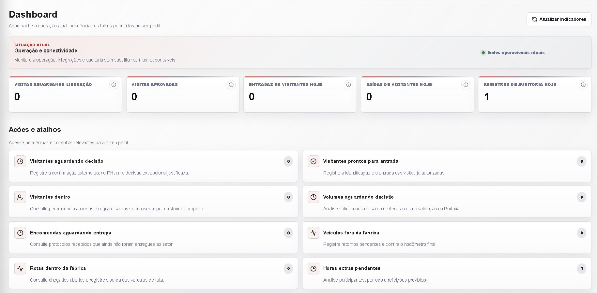

Industrial workflows
Gatehouse & maintenance
Technos · through IPena Consultoria
To modernize gatehouse and maintenance workflows, I developed a system for visitor, employee, vehicle and goods-movement records, with Protheus-backed service-request lookup and creation.
Role-based permissions and audit trails support controlled access records and maintenance administration.
Next.js / React · ASP.NET Core · PostgreSQL · TOTVS Protheus
